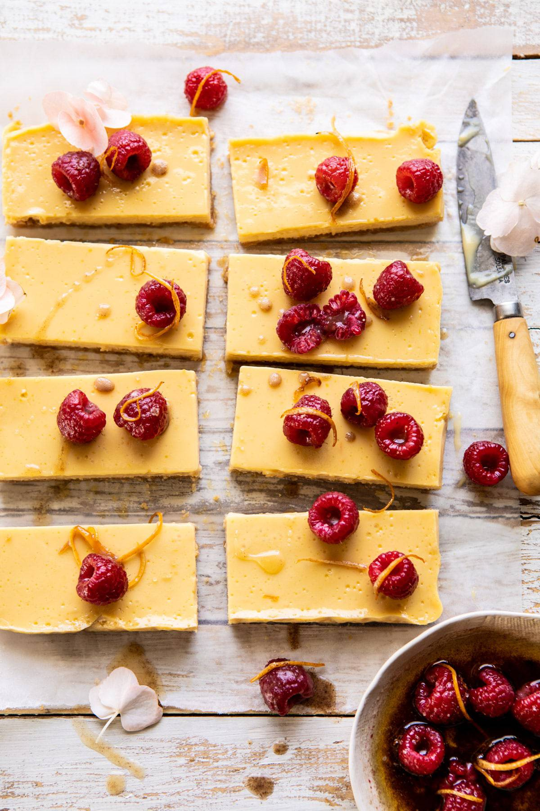

Brown Buttered Raspberry Topped Lemon Bars
Home

Ingredients
- 1 sleeve of Ritz crackers, finely crushed into crumbs(about 1 1/2 to 2 cups crushed crackers)
- 6 tablespoons of salted butter, melted
- 2 tablespoons of brown sugar
- 1 large egg + 2 large egg yolks
- 1 can (14 ounce) sweetened condensed milk
- 2 teaspoons of lemon zest
- 1 cup of freshly squeeze lemon juice, preferably from Meyer lemons
- 1 teaspoon of vanilla extract
- ½ teaspoon of kosher salt
- 4 tablespoons of salted butter
- 1 tablespoon of lemon zest
- 1 ½ cups of fresh raspberries
Instructions
- Preheat the oven to 350 degrees F. Line an 8x8 inch square baking dish with parchment paper.
- In a small bowl, mix together the cracker crumbs, melted butter, and brown sugar. Press the mixture into the bottom of the prepared baking pan. Transfer to the oven and bake 15 minutes, until light golden on top.
- In a medium mixing bowl, whisk together the egg and egg yolks. Add the sweetened condensed milk, lemon zest, lemon juice, vanilla, and salt until combined. Pour the mix over the cracker crust. Return to the oven and bake for 15-17 minutes, until just set. Allow the bars to cool in the pan, then place in the fridge to cool completely, at least 2 hours or overnight.
- Cut into bars. Just before serving, spoon over the browned butter raspberries. The bars can be kept chilled in the fridge for up to 4 days.
- To make the raspberries, add the butter to a skillet set over medium heat. Allow the butter to brown lightly until it smells toasted, about 2 minutes. Stir often. Remove from the heat and add the lemon zest. Gently toss the berries with the butter and spoon overtop the bars.